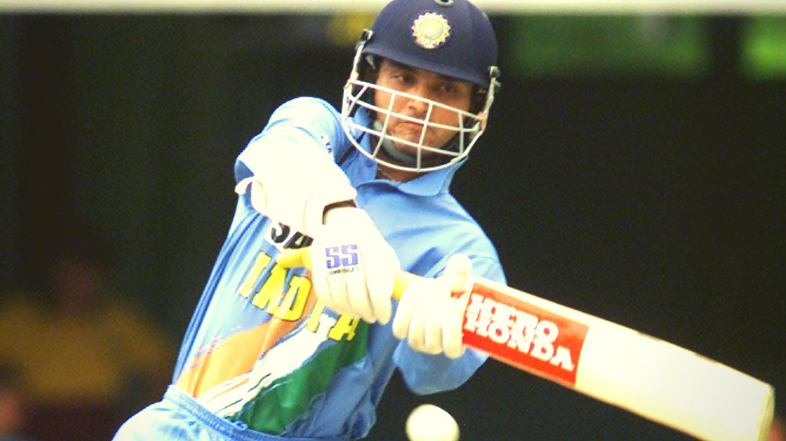
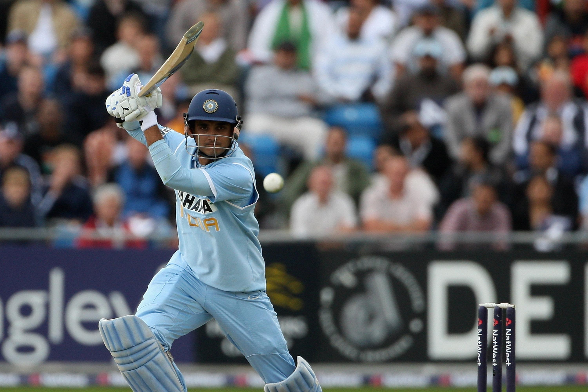
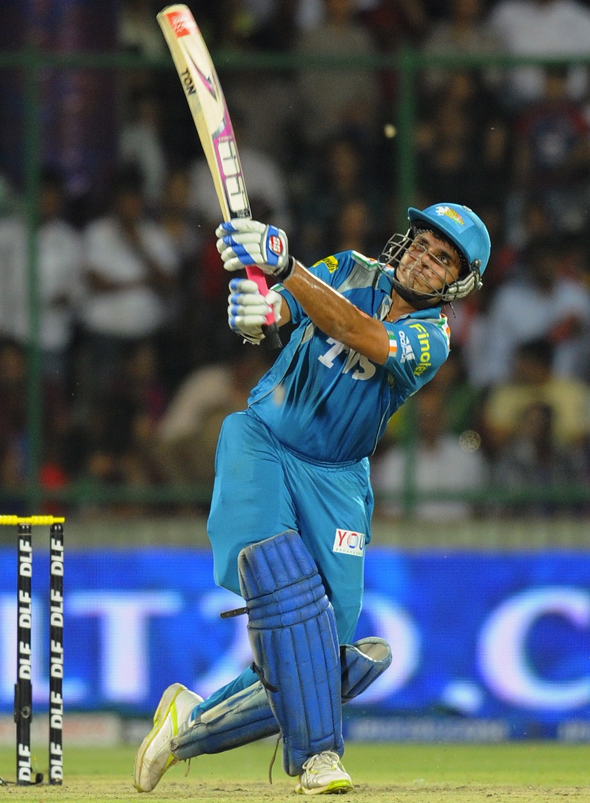
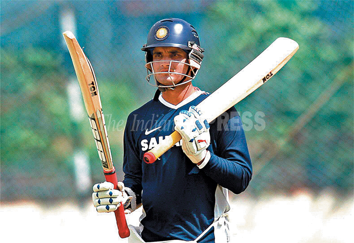
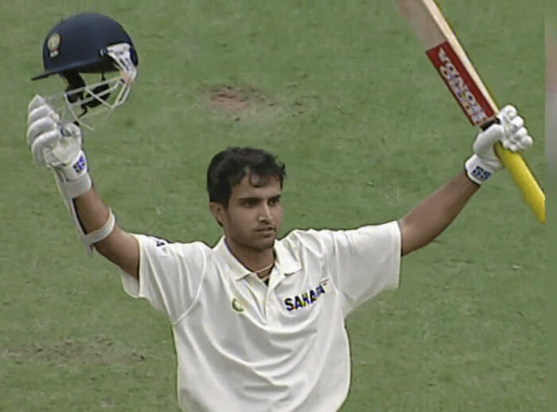
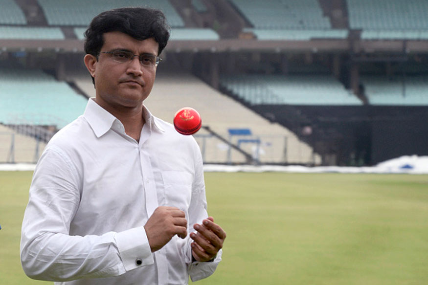
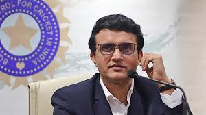

Sourav Chandidas Ganguly is regarded as one of India's most successful captains in modern times. He is the 5th highest run scorer in One Day Internationals (ODIs) and was the 5th person in history to cross the 10,000 run landmark. He is only the 2nd Indian to cross that mark in ODIs, after Sachin Tendulkar. Wisden ranked him the sixth greatest one day international batsman of all time, next to Viv Richards, Sachin Tendulkar, Brian Lara, Dean Jones and Michael Bevan. He was India''s most successful Test captain - forging a winning unit from a bunch of talented, but directionless, individuals - and nobody can argue about him being one of the greatest one-day batsmen of all time. Despite being a batsman who combined grace with surgical precision in his strokeplay, his career had spluttered to a standstill before being resurrected by a scintillating hundred on debut at Lord''s in 1996. Later that year, he was promoted to the top of the order in ODIs and, along with Sachin Tendulkar, formed one of the most destructive opening pairs in history.
|  |  | |
 |
|  |  |  |  |
Saurav Ganguly possessed a natural knack for leadership which is why he is considered one of the most successful captains in cricket. He was responsible for instilling ambition into a somewhat unfocused team when he took over the captaincy in 2000. Ganguly’s batting style was equally superb and he is the only cricketer to secure four consecutive Man of the Match awards in One Day International matches.